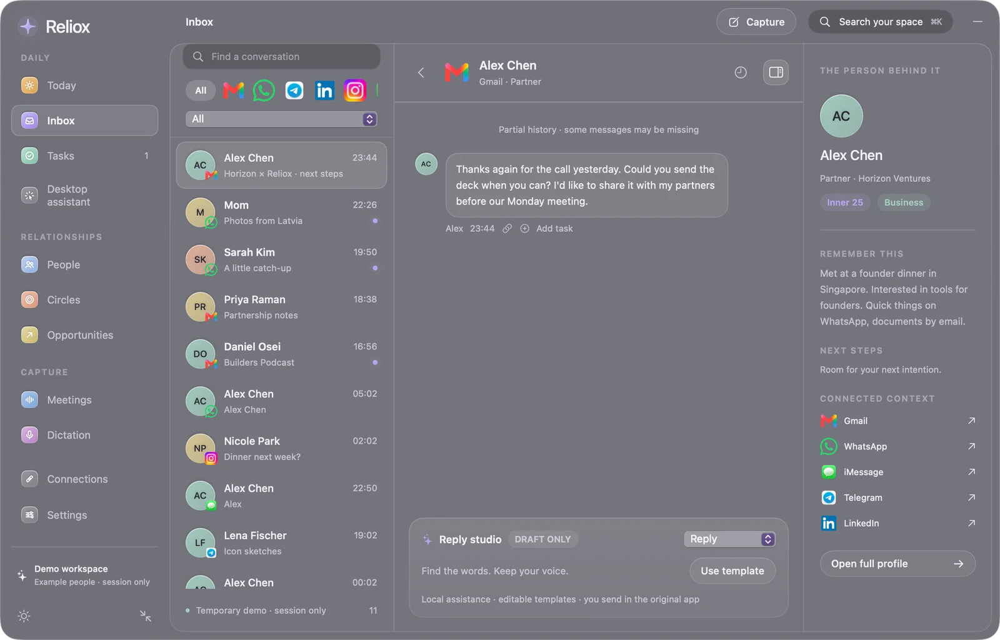

Reliox
Your people.
All the context.
Conversations, relationships and
next steps. A little closer.
relioxos.com
Example workspace

Conversations, relationships and
next steps. A little closer.
relioxos.com
Example workspace
